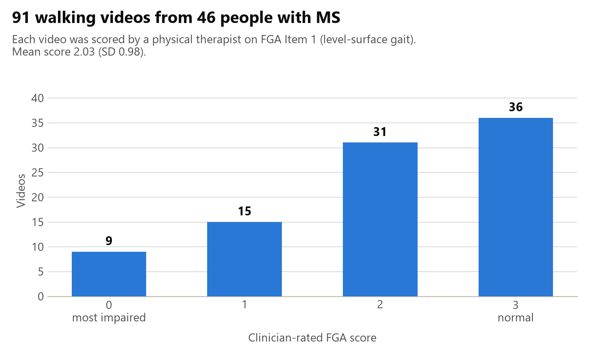
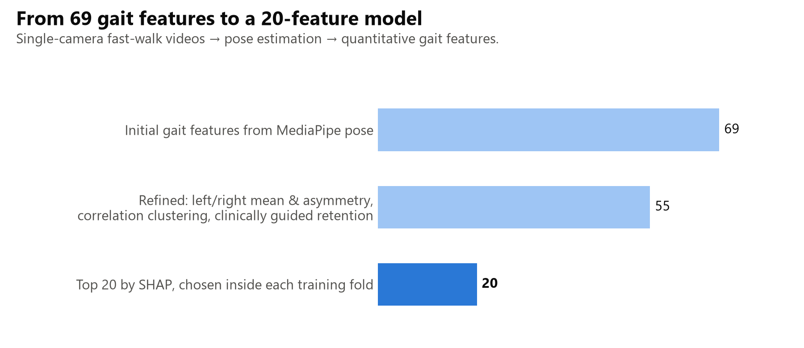
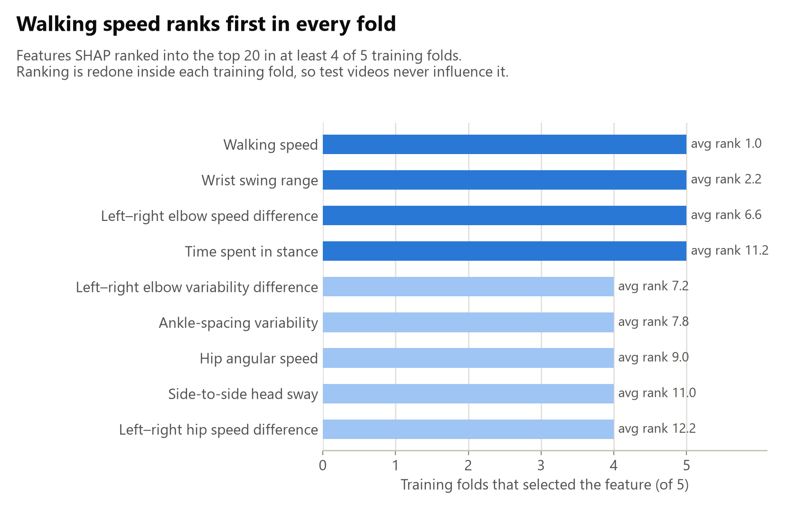

BrainWalk, at UC San Francisco, asks whether an ordinary walking video can stand in for a measurement that normally needs a physical therapist in the room. I work on the model: everything from the pose landmarks to the cross-validation design, and on the question of what the model is still blind to.
Advisors: Peter Yiitcan Washington, PhD and Riley Bove, MD · January 2025 – present
Multiple sclerosis damages the myelin around nerve fibres, and one of the places the damage shows up first is walking: speed drops, the stride loses its symmetry, the body works harder to stay balanced. Clinicians track this with scales like the Functional Gait Assessment, scored while watching the person walk. Item 1 covers walking on a level surface and runs from 0, severe impairment, to 3, normal.
A score like that is only taken when the person is in the clinic, which may be twice a year. The change worth catching often happens in between. If the same judgement could be made from a phone video, it could be made as often as the person is willing to record one — which is the reason to ask how far a single camera gets you.
91 fast-walk videos from 46 people with MS, each watched and scored by a physical therapist. One camera, no markers, no depth sensor.

A pose estimator reads each frame and returns the positions of the body's landmarks — nose, shoulders, elbows, wrists, hips, knees, ankles, feet. Everything downstream is built out of how those points move relative to each other, which is what keeps the method independent of where the camera happened to be standing.
The timing features come from the events inside one stride. A stride divides into the stance phase, where the foot is carrying weight, and the swing phase, where it is travelling; how that time is divided is one of the things that changes when walking gets harder.
The first pass produced 69 features, and many of them were saying the same thing twice. Left and right versions of a measurement were folded into a mean and an asymmetry term, which is the form a clinician reasons in anyway. What remained was clustered by Spearman correlation, so that any group of features moving together above a threshold was represented by one of them — with the choice of which one guided by what the clinical team could interpret, not just by which had the highest variance.

That distinction is the whole point. Ranking features by SHAP on the full dataset and then training on the winners would let the test videos influence which features the model was allowed to see. Doing the ranking inside each training fold costs accuracy on paper and buys a number you can believe.
46 people, 91 videos: most participants are recorded more than once. Split those videos at random and the same person's walk appears in training and in test, and the model can score well by recognising the walker rather than the walking. The result would look good and would mean nothing for the next patient through the door.
So every split is made over participants, never over videos, and the tuning happens in an inner loop inside each training set — five outer folds, three inner. Feature selection and hyper-parameter search both live in the inner loop, which is the only way the outer fold stays an honest estimate of what happens on someone the model has never seen. Confidence intervals come from bootstrapping over the held-out predictions, because with 46 people a single point estimate is not worth much on its own.
Because the ranking is redone in every fold, the interesting question is not which features one model liked but which ones kept being chosen no matter how the data was split.

Most of the model's predictions land within one level of the clinician's score. Its errors are not spread evenly, though: it is at its worst exactly where the data is thinnest and where being right matters most, on the videos a therapist scored 0.
Rather than treat that as a class-imbalance problem to be reweighted away, I went back and watched those videos with the physical therapist. In eight of the nine, the person steadied themselves against the wall as they walked. For a clinician that is decisive — needing the wall is most of what a 0 means. For the model it is invisible: the landmarks describe the body and nothing else in the room, so a person who is walking slowly but with their hand on a wall looks much like a person who is simply walking slowly.
That is a data problem rather than a modelling one, and it does not get fixed by a better loss function. I handed the clinical team a feature-importance report and a data dictionary so the question can be settled properly: whether wall contact should be annotated, or detected, before anyone asks a model to reproduce a score that partly depends on it.